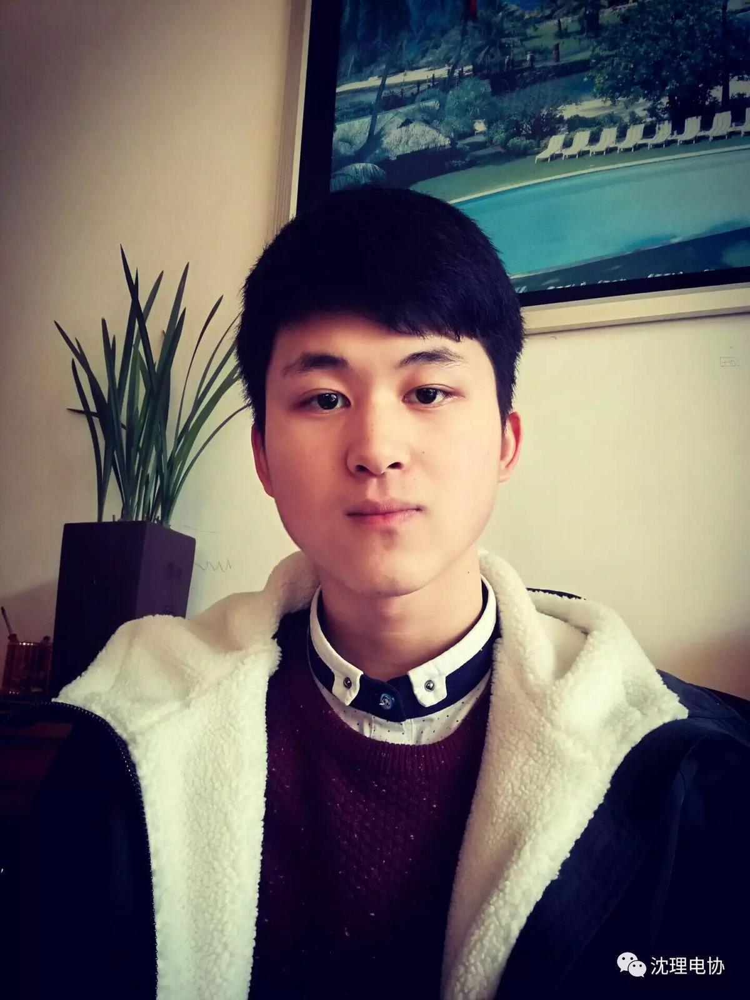
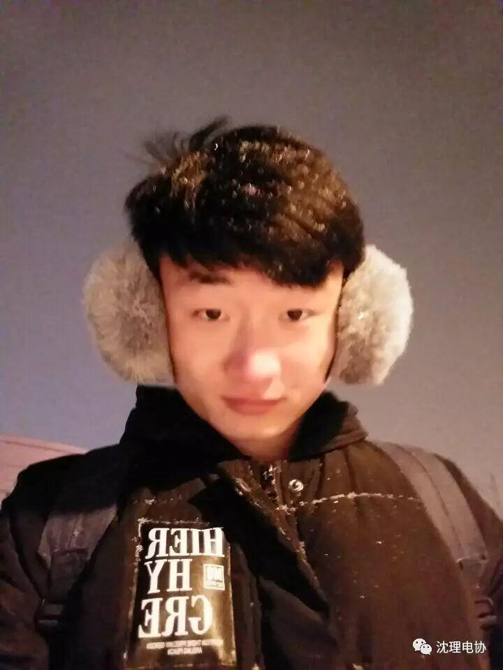
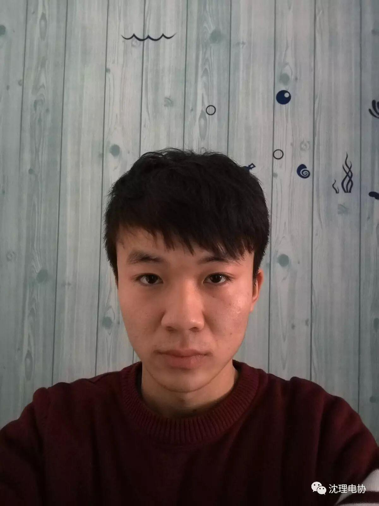
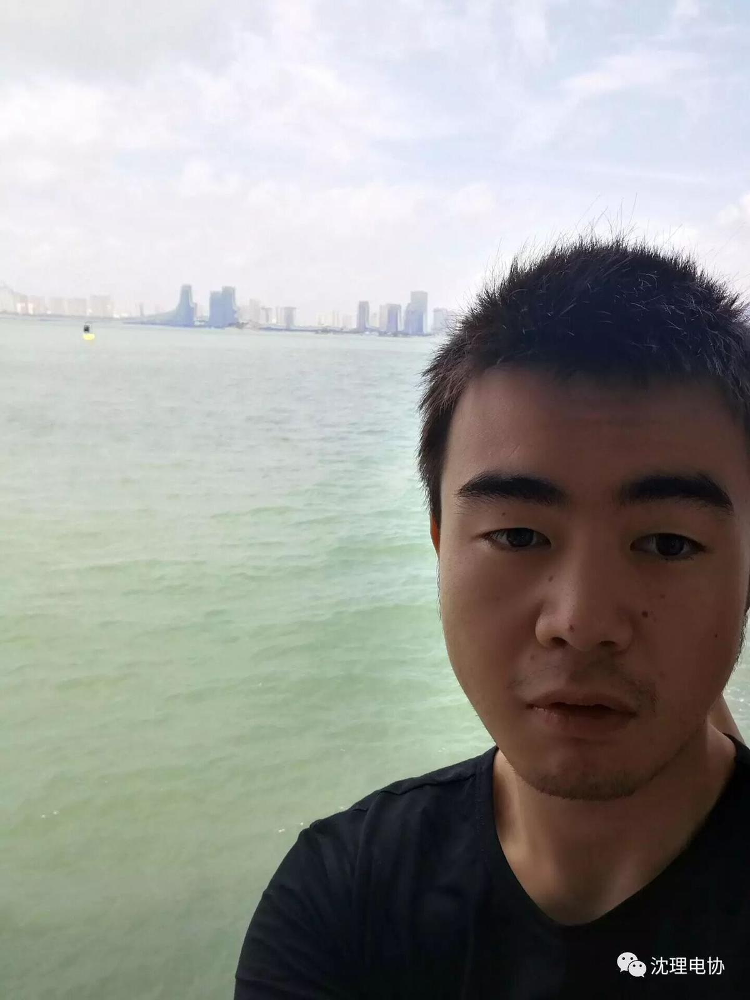

最美电协 最美财务部
今天为大家介绍一下我们财务部的小可爱们，哈哈哈，他们掌管着我们电协的财政哦~这里有帅哥有美女大家过来看看吧！
首先是他们可爱帅气的部长陈元亮
他有一个简单粗暴的简介。。。。
略，够简单吧，哈哈哈
接下来是部门唯一的妹子。。
张婧睿，爱好：学习，对象：图书馆。
扶我起来我还能再学两个小时。
接下来到他们部的男同学了。。。
 one：
one：
代宝昊，男，信息院电子信息工程的，喜欢足球，热爱生活。性格慢热，目前单身哦！哈哈哈哈
two：
姓名刘根绮，专业 机械设计制造及其自动化，辽宁朝阳人，不会语言，不会芯片，不会软件，但，啥都想学，望大神们多多帮助！
three：

田毅，男，财务部，喜欢篮球，为人低调，喜欢静静地看着你；此处省略三千字。。。。。
four：

熊长林 ♂ 测控1班;性格稳重，不善于交际。平常喜欢踢足球，大学拥有一个目标:我要考回重庆。
小编表示抱歉最后一位我没找到他，下次补上，现在暂报失踪。。。好吧当我要发的时候他出现了，
最后一位：

古明瑞，喜欢。。。NBA。喜欢看雷霆的球。。威少的劲爆打球方式。。。。网球。。就是不会打。。最喜欢看德约的比赛。。稳中却不缺精彩。。有时看看动漫啥的。。大爱海贼。。。